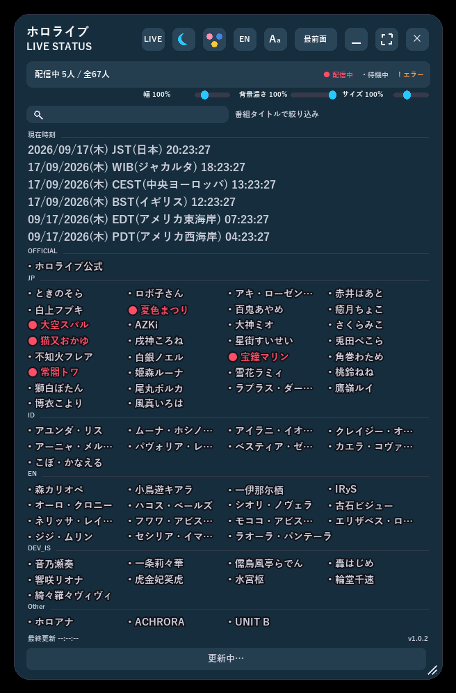
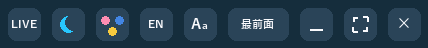
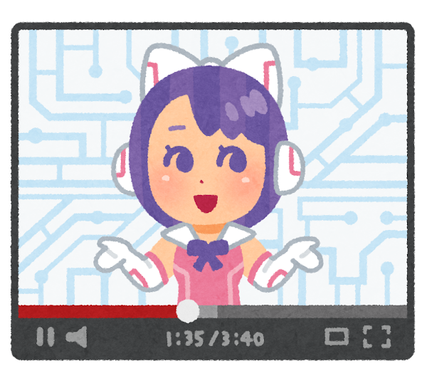
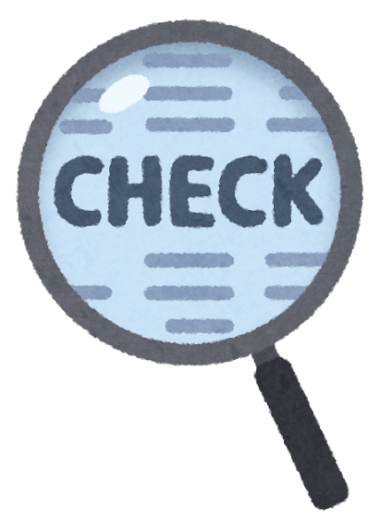
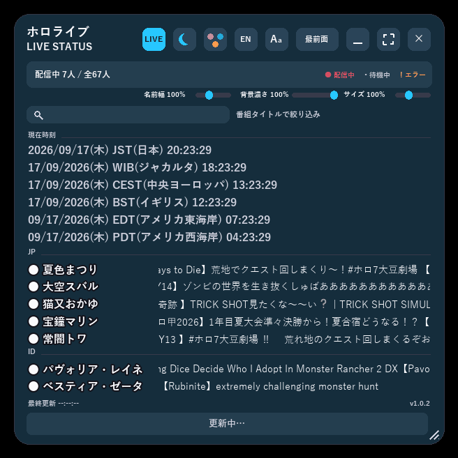
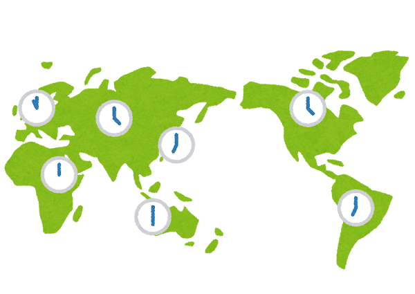
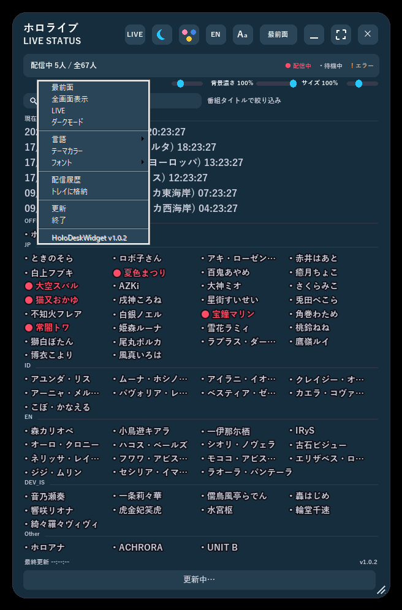
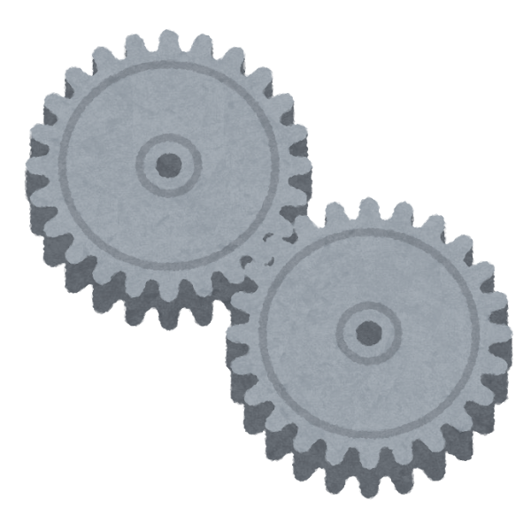

HoloDeskWidget って、こんなアプリ！
hololive所属タレントの配信状況を、デスクトップの片隅に常時表示できる
Windows用の常駐デスクトップウィジェットです。

hololive所属タレントの配信状況を、デスクトップの片隅に常時表示できる
Windows用の常駐デスクトップウィジェットです。

実際の画面: 配信状況の色分け表示・世界時計を一つのウィンドウにまとめて表示

右上のボタン列からLIVEフィルタ・ダークモード・テーマカラー・言語・最前面固定などをワンクリックで操作

hololive所属タレントの状態を「配信中・待機中・取得エラー」で色分け表示。カードをクリックすれば配信ページやチャンネルページをすぐ開けます。
いつでも最前面に表示できる透過ウィンドウ。ドラッグで自由に移動、端をつまんでサイズ変更もできます。

今まさに配信中のタレントだけに絞り込み。配信タイトルはティッカーで横スクロール表示されます。


普段よく確認する時刻帯の「今」をまとめて表示。ゾーンの追加・編集も自由自在です。

ダーク/ライトモード、テーマカラー、フォント、表示言語（日本語/英語）、透過度や文字サイズまで自由に変更できます。


ウィンドウの位置・サイズや各種設定は自動保存され、次に起動したときもそのまま復元されます。

起動時にhololive公式サイトからチャンネルを自動で調べにいくので、リンク切れが起きにくい仕組みです。